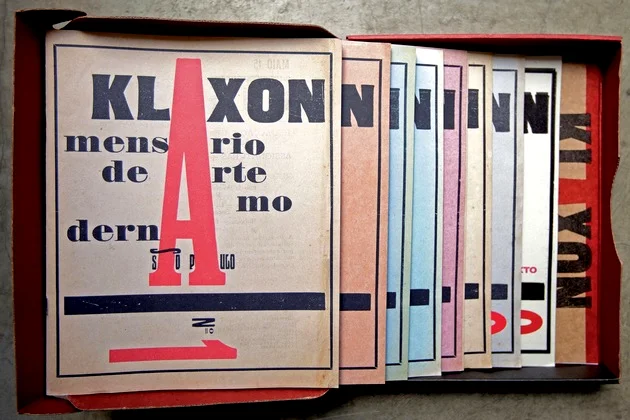

A Semana de Arte Moderna foi uma manifestação artístico-cultural que ocorreu no Theatro Municipal de São Paulo entre os dias 13 a 17 de fevereiro de 1922. O evento reuniu diversas apresentações de dança, música, recital de poesias, exposição de obras - pintura e escultura - e palestras. Os artistas envolvidos propunham uma nova visão de arte, a partir de uma estética inovadora inspirada nas vanguardas europeias. Juntos, eles buscavam uma renovação social e artística no país, evidenciada na "Semana de 22". O evento chocou parte da população e trouxe à tona uma nova visão sobre os processos artísticos, bem como a apresentação de uma arte “mais brasileira”. Houve um rompimento com a arte acadêmica, contribuindo para uma mudança estética e para o Movimento Modernista no Brasil. Mário de Andrade foi uma das figuras centrais da Semana de Arte Moderna de 22. Ele esteve ao lado de outros organizadores: o escritor Oswald de Andrade e o artista plástico Di Cavalcanti.
Em 1922, quando a Independência do país completava cem anos, o Brasil passava por diversas modificações sociais, políticas e econômicas (advento da industrialização, fim da Primeira Guerra Mundial). Surge então a necessidade de recorrer a uma nova estética, e daí nasce a "Semana de Arte Moderna". Ela esteve composta por artistas, escritores, músicos e pintores que buscavam inovações. O intuito era criar uma maneira de romper com os parâmetros que vigoravam nas artes em geral A maioria dos artistas era descendente das oligarquias cafeeiras de São Paulo, que junto aos fazendeiros de Minas, formavam uma política que ficou conhecida como “Café com Leite”. Esse fator foi determinante para a realização do evento, uma vez que foi respaldado pelo governo de Washington Luís, na época governador do Estado de São Paulo. Além disso, a maioria dos artistas - que tinha possibilidades financeiras para viajar e estudar na Europa - trouxe para o país diversas tendências artísticas. Assim foi se formando o movimento modernista no Brasil. Com isso, São Paulo demonstrava (em confronto com o Rio de Janeiro) novos horizontes e uma figura de protagonismo na cena cultural brasileira. Para Di Cavalcante, a semana de arte: Seria uma semana de escândalos literários e artísticos, de meter os estribos na barriga da burguesiazinha paulista. Foi assim que durante três dias (13, 15 e 17 de fevereiro) essa manifestação artística, política e cultural reuniu jovens artistas irreverentes e contestadores. O evento foi inaugurado pela palestra do escritor Graça Aranha: “A emoção estética da Arte Moderna”; seguido de apresentações musicais e exposições artísticas. O evento estava cheio e foi uma noite relativamente tranquila. No segundo dia, houve apresentação musical, palestra do escritor e artista plástico Menotti del Picchia, e a leitura do poema “Os Sapos” de Manuel Bandeira. Ronald de Carvalho fez a leitura, pois Bandeira encontrava-se em uma crise de tuberculose. Nesse poema, a crítica à poesia parnasiana era severa, o que causou indignação do público, muitas vaias, sons de latidos e relinchos. Por fim, no terceiro dia, o teatro estava mais vazio. Houve uma apresentação musical com mistura de instrumentos, exibida pelo carioca Villa Lobos. Nesse dia, o músico subiu ao palco vestindo casaca e calçando em um pé sapato e no outro um chinelo. O público vaiou pensando que se tratasse de uma atitude afrontosa, mas depois foi explicado que o artista estava com um calo no pé.
Comissão Organizadora da Semana de Arte Moderna. Da esquerda para a direita: Manuel Bandeira é o segundo e Mário de Andrade, o terceiro; Oswald de Andrade aparece em primeiro plano.
Mário de Andrade (1893-1945)
Oswald de Andrade (1890-1954)
Graça Aranha (1868-1931)
Victor Brecheret (1894-1955)
Plínio Salgado (1895-1975)
Anita Malfatti (1889-1964)
Menotti Del Picchia
(1892-1988)
Guilherme de Almeida (1890-1969)
Sérgio Milliet (1898-1966)
Heitor Villa-Lobos (1887-1959)
Tácito de Almeida (1889-1940)
Di Cavalcanti (1897- 1976)
Guiomar Novaes (1894-1979)
Zina Aita (1900-1967)
A crítica ao movimento foi severa, as pessoas ficaram desconfortáveis com tais apresentações e não conseguiram compreender a nova proposta de arte. Os artistas envolvidos chegaram a ser comparados aos doentes mentais e loucos. Com isso, ficou claro que faltava uma preparação da população para a recepção de tais modelos artísticos. Monteiro Lobato foi um dos escritores que atacou com veemência as ações da Semana de 22. Anteriormente, ele já havia publicado um artigo criticando as obras de Anita Malfatti, em uma exposição da pintora realizada em 1917.
Há duas espécies de artistas. Uma composta dos que vêem normalmente as coisas (..) A outra espécie é formada pelos que vêem anormalmente a natureza e interpretam-na à luz de teorias efêmeras, sob a sugestão estrábica de escolas rebeldes, surgidas cá e lá como furúnculos da cultura excessiva. (...) Embora eles se dêem como novos, precursores de uma arte a vir, nada é mais velho do que a arte anormal ou teratológica: nasceu com a paranóia e com a mistificação(...) Essas considerações são provocadas pela exposição da senhora Malfatti onde se notam acentuadíssimas tendências para uma atitude estética forçada no sentido das extravagâncias de Picasso e companhia.
Após a Semana de Arte Moderna, considerada um dos marcos mais importantes na história cultural do Brasil, foram criadas inúmeras revistas, movimentos e manifestos. A partir disso, diversos grupos de artistas se reuniam com o intuito de disseminar esse novo modelo. Destacam-se:
Revista Klaxon (1922)
Revista Estética (1924)
Movimento Pau-Brasil (1924)
Movimento Verde-Amarelo (1924)
A Revista (1925)
Manifesto Regionalista (1926)
Terra Roxa (1927)
Outras Terras (1927)
Revista de Antropofagia (1928)
Movimento Antropofágico (1928)
Capa do primeiro exemplar da Revista Klaxon, publicada em maio de 1922
Podemos também citar outros desdobramentos culturais que se inspiraram nas ideias dos modernist como o Tropicalismo e a geração da Lira Paulistana, nos anos 70, e inclusive a Bossa Nova.